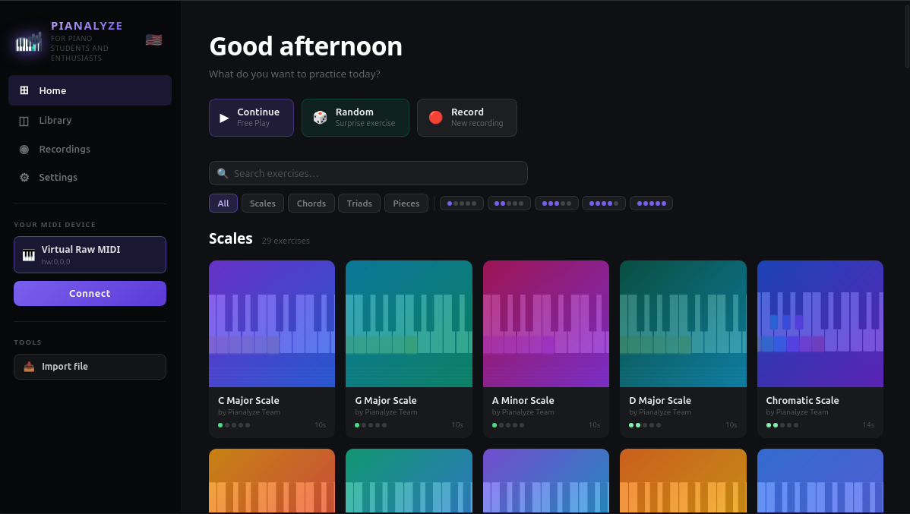
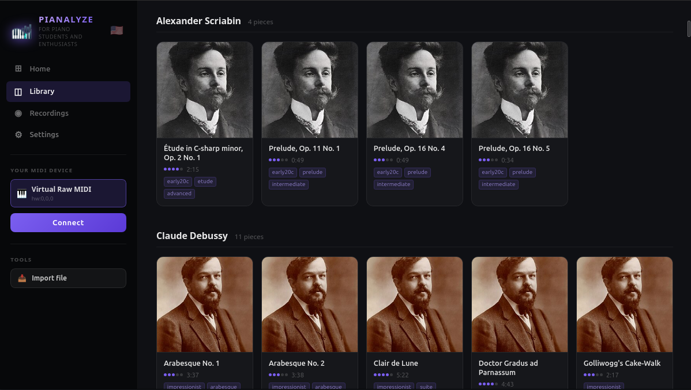
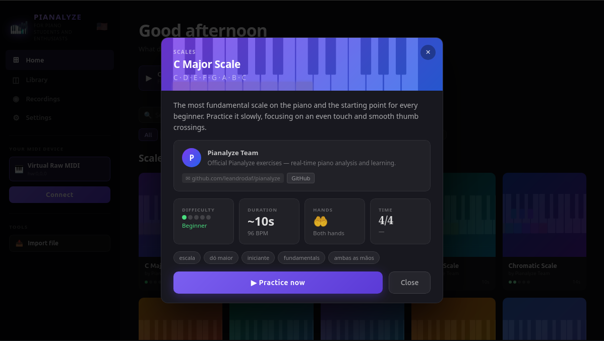
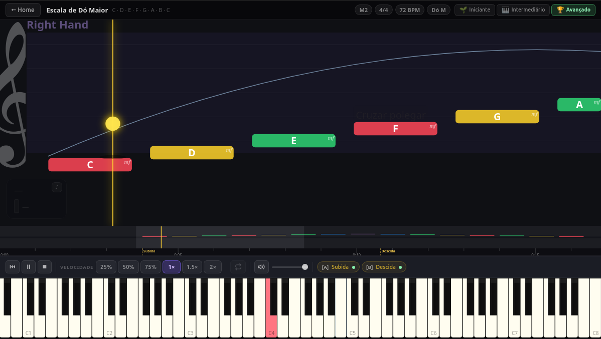
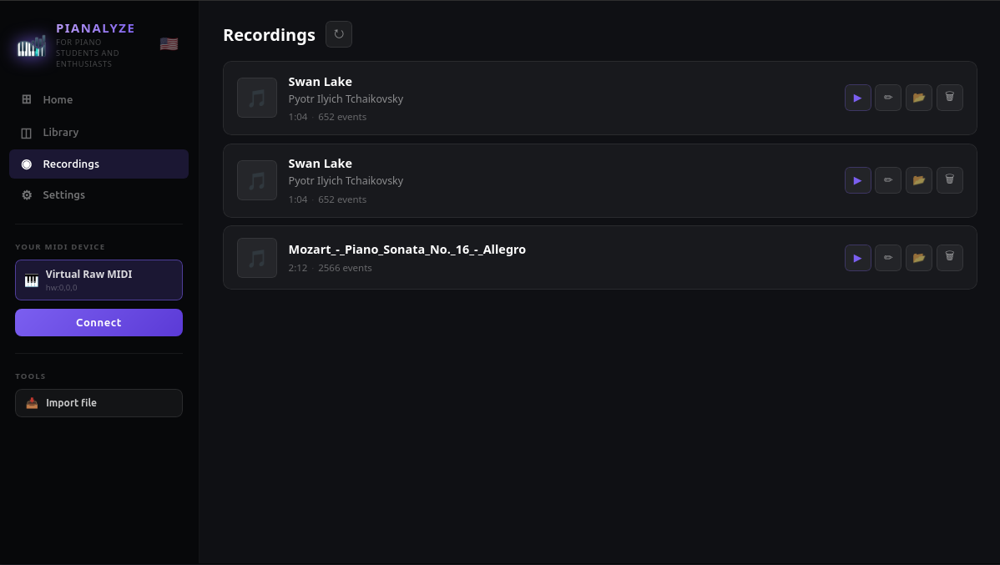
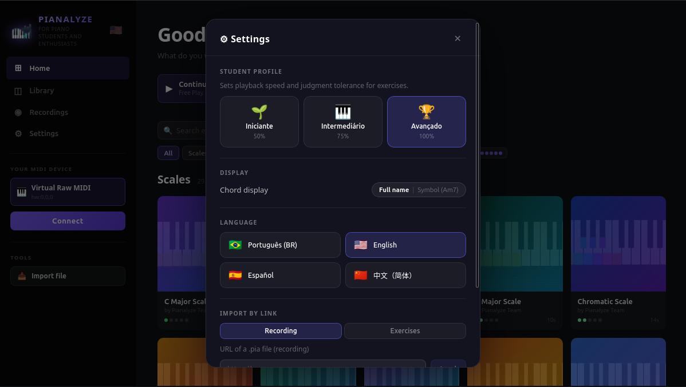

Exercícios guiados, feedback em tempo real e o nome de cada nota e acorde logo que você toca — tudo grátis, no seu piano de verdade. Você não precisa de professor para começar.

Não importa se você é iniciante ou já toca há algum tempo — o Pianalyze se adapta ao seu nível.
Escalas, progressões de acordes, leitura à primeira vista e muito mais — exercícios variados que você pratica ao seu ritmo, no seu piano de verdade, sem precisar de professor.
Cada tecla que você pressiona aparece na tela com seu nome — Dó, Ré sustenido, Lá bemol. Sem decorar: você aprende de forma natural enquanto toca.
Tocou três ou quatro notas juntas? O app identifica o acorde na hora — nome e inversão. Você começa a entender harmonia sem perceber. Mais de 80 acordes reconhecidos.
Você toca piano, forte ou mezzo-forte? O Pianalyze mostra a intensidade de cada nota e te ajuda a desenvolver controle de toque — fundamental para tocar com sentimento.
O app grava suas sessões de prática. Volte e veja exatamente quais notas tocou, onde errou e como você está evoluindo — sessão por sessão.
Nenhuma assinatura, nenhuma versão premium, nenhum paywall. Aprender piano não deveria custar caro — e com o Pianalyze, não custa nada.
Você não precisa configurar nada complicado. Se seu piano MIDI liga, funciona.
Ligue seu teclado ou piano digital via USB ou MIDI. O Pianalyze detecta automaticamente — sem configuração manual.
Inicie o Pianalyze, escolha seu dispositivo na lista e comece a tocar. É isso. Não tem mais nenhum passo.
As notas e acordes aparecem na tela em tempo real. Com o tempo, você começa a reconhecer os padrões sem precisar olhar.
Interface direta ao ponto — nada de menu complicado.





O Pianalyze foi construído como open source justamente para que escolas de música e professores possam usá-lo e adaptá-lo sem custo. Seus alunos praticam em casa e chegam na aula mais avançados.
Disponível para Windows, macOS e Linux. Instale em segundos, sem criar conta.
v0.1.2 · Release notes →
Todos os downloads ficam na página de releases do GitHub.
Código aberto sob licença MIT — sem rastreamento, sem telemetria obrigatória.
Baixe grátis, abra, conecte o piano e toque. É só isso.
⬇ Baixar o Pianalyze — grátis